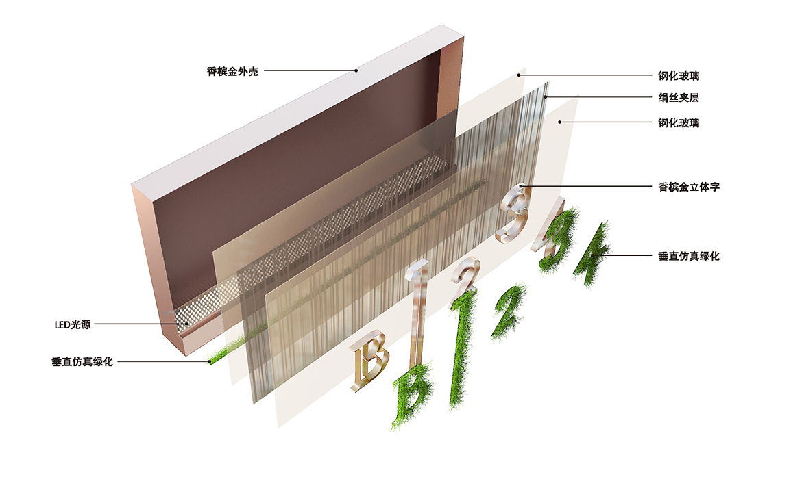

苏州星湖国际广场导视系统
Suzhou starlake International Plaza signage system
苏州市
项目面积：30万平方米
设计时间：2016年
项目位于创苑路和八达街交界处，属于独墅湖科教创新 区的月亮湾板块。周边地块以商务和商业功能为主，共同组 成科教创新区的商业板块。星湖国际广场是集写字楼、商业 中心、公馆为一体的月亮湾板块综合体项目，而对于标识设 计，本案的设计主线原则是应契合所在环境并把握简约、明 朗，便于识别的特点；户外以大气、沉稳为关键词，户内以 交互、和谐为关键词。
 返回顶部
返回顶部